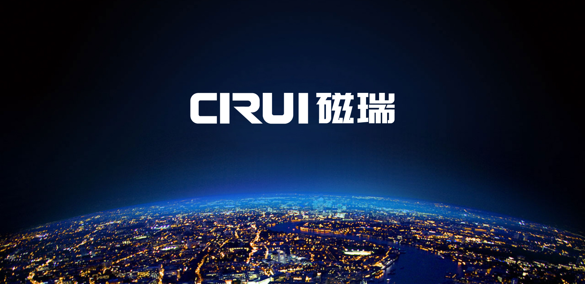

济南磁瑞磁悬浮科技有限公司是国内从事磁悬浮轴承技术研究和应用的高科技企业，整合国内外磁悬浮电机领域的权威技术和人才资源，致力于成为中国磁悬浮鼓风机智造的民族品牌。

磁瑞经过多年的发展目前已经成为磁悬浮技术的领跑者，但现有品牌形象已经陈旧，跟不上企业和市场节奏的发展，缺乏国际化科技企业的气质和高度，企业形象与企业发展严重不符；在对外传播上，缺乏核心的价值输出，不利于企业形象的塑造，如何从形象和价值传播上拉升企业的高度，是磁瑞当前需要解决的问题。
磁瑞面临的问题
（1）品牌形象缺乏统一规范，没有形成独特的视觉认知？
（2）品牌形象老化，缺乏现代科技企业气质
（3）整体形象不符合现代审美和趋势
全新战略的提出
岂止智造，更是创新
致力于磁悬浮技术应用的产业化、规模化、和未来化，满足更多服务的需求，推动磁悬浮技术进步发展。
磁瑞聚焦于应用型磁悬浮技术，提供满足不同应用领域需求的磁悬浮轴承技术，通过将磁悬浮技术融入传统风机之中，形成“高效、节能、环保”的新型鼓风机。创新产品和解决方案，致力于成为中国磁悬浮鼓风机智造的民族品牌，成为磁悬浮技术的领跑者。
品牌理念的输出
为美好生活而转动
重新定义了磁瑞的企业高度和发展格局，传递了更远大的企业理想和愿景；磁瑞存在的意义并不仅仅是制造产品和提供技术支持，更是通过创新的解决方案，扩展磁悬浮技术应用领域，为社会创造更多惊喜和可能。

通过产品和技术应用于日常生活的场景，以技术服务于生活，不断致力于为更美好的生活而创新创造。
品牌形象全面升级
品牌视觉的全面规范和执行导入
经过多年的发展，固有的视觉形象已经不能满足当前的企业实际和未来的战略，因此，我们在品牌标识，VI应用，终端视觉等层面进行了全面的变革和升级，自上而下对磁瑞品牌进行全面的视觉统一和规范，输出全新的视觉系统。
通过标识创新，色彩规范，应用统一，实现了品牌视觉的整体焕新和升级，改变了传统老旧的形象，打造出专业的科技企业气质，迅速提升了品牌形象和高度。
品牌标识的全面升级
基于品牌战略发展，在logo颜色的选择上采用蓝色，将其作为企业的专属色，长期保持一致性，在一定程度上承诺自身的可信度和产品质量，和企业本身发挥的价值相得益彰，体现尊贵的品质。

vi视觉的全新运用
将LOGO作为辅助图形进行基本视觉要素的设计延伸和拓展，可以根据不同场合不同产品进行不同形式变换，这样的运用加强了企业形象的诉求力度，当然也使企业形象的视觉表现更加的丰富化。


 终端传播的全面规范
终端传播的全面规范
根据磁瑞日常传播的渠道和特征，我们重点通过物流车，产品主画面，户外广告等进行品牌的传播，从而最大程度利用对外媒介资源，创造品牌与外界的接触点，从而达到低成本传播的目的。


济南海右博纳品牌营销咨询有限公司
Copyright 2001-2019 All Rights Reserved Sivibrand.
王伟品牌顾问微信